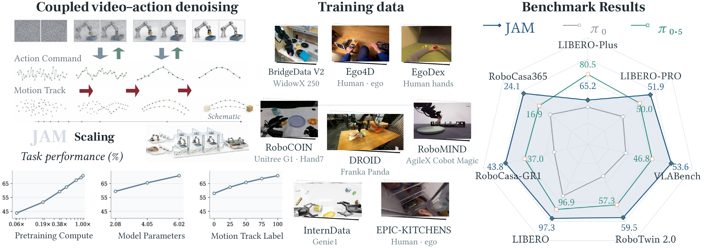
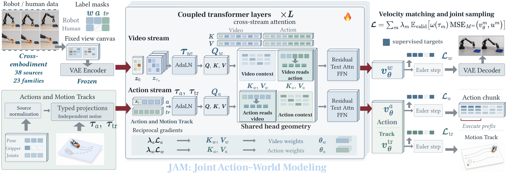
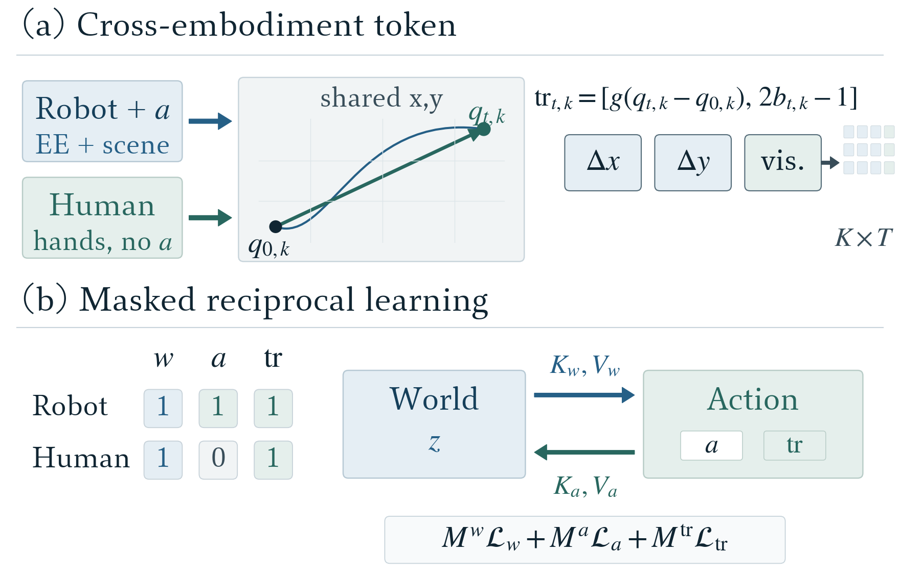
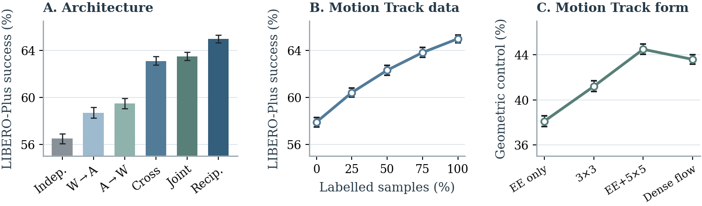
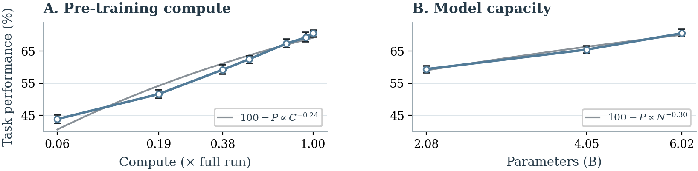
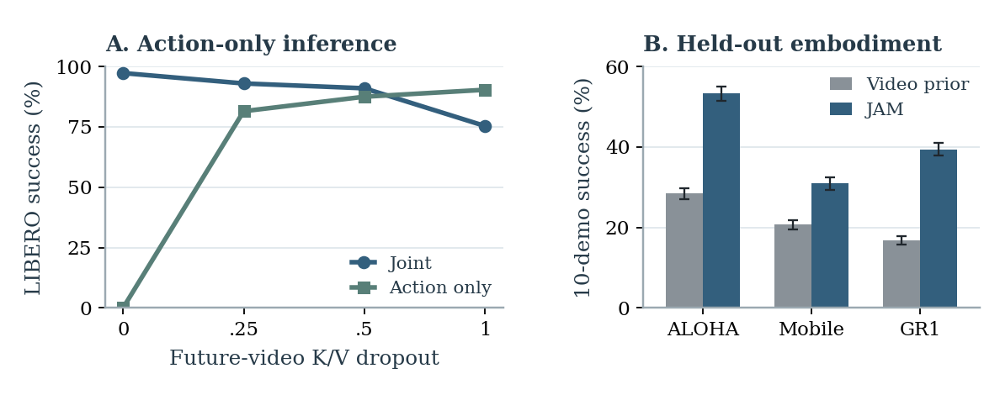

01
Place bread in the bowl
Randomized object and bowl positions test grasping and placement.
Video shows how a scene changes. Robot actions explain how an agent produces that change. JAM learns both directions through reciprocal world and action pretraining.
Separate world and action streams share keys and values at every coupled layer. Motion Tracks connect native robot control with visible motion in human video.

Randomized object and bowl positions test grasping and placement.
A narrow pot and flexible geometry demand precise release.
The ring requires accurate pose control before release.
Three placements test long horizon stability.
Closing the lid requires sustained contact and force.
Both rollouts reach the final interaction. One misses the receptacle during release. The other destabilizes a two block stack during the last placement.
A shared pretrained checkpoint adapts across fixed base and bimanual systems. The same checkpoint transfers to mobile and humanoid control. Each benchmark keeps its native interface and evaluation protocol.
Mean success across the standard four suite evaluation.
Seven controlled robustness axes
Compositional scene shifts
Language rich long horizon tasks
Clean and randomized settings
Mobile manipulation
Humanoid tabletop control
Values follow the corresponding manuscript tables and benchmark protocols.
Video prediction learns scene dynamics. Action prediction grounds those dynamics in executable control. JAM couples both objectives while preserving a separate representation for each stream.
World tokens retain visual geometry. Action tokens retain control coordinates.
Each stream attends to the combined keys and values at every layer.
Each loss updates both streams and links predicted change with the action that produces it.

Separate streams exchange context and gradients. One masked objective trains future video and Motion Tracks together with native actions.
Robot actions use embodiment specific coordinates. Human video supplies image space motion. Motion Tracks encode anchor relative displacement and visibility, which creates a common prediction target across both sources.

Reciprocal coupling gives each objective access to the representation learned by the other. Motion Track supervision grounds this exchange in visible geometry. Compute and model capacity extend the gain.

Reciprocal coupling produces the strongest architecture result.

Task performance rises smoothly with pretraining compute and model capacity.
Future video key and value dropout teaches the action stream to operate alone. Deployment decodes actions directly and retains the representation learned from joint supervision.
